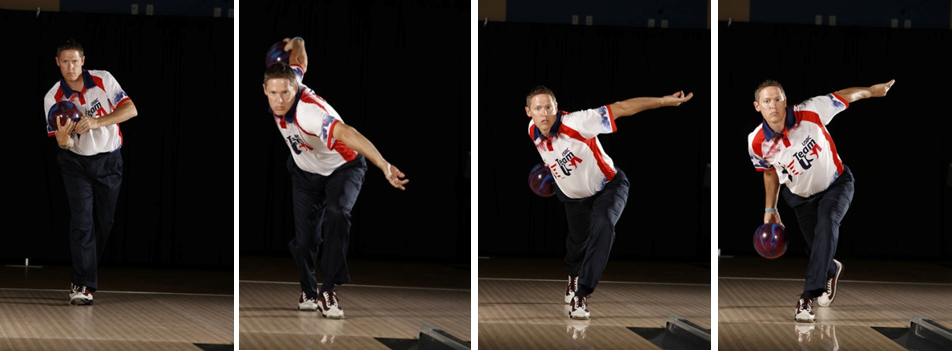

On the surface, bowling seems like a very simple game; roll a ball at some pins.
And, of course, it can be played as such.
However, like anything else in life, high-scores and consistency come with practice
and an understanding of the sport.
This article aims to briefly discuss the basics of bowling.
Ball Types and Drilling
There are many different ball types to choose from. Typically, ball
types are classified by their coverstock, the material which comprises the outershell.
This material will determine how the ball reacts on the lane. Reactive
coverstocks are more likely to hook, or react, than a urethane or
plastic ball.
Because balls yield different reactions, bowlers typically carry multiple balls
of different types in order to execute different shots.
Drilling is always handled by a professional at a proshop,
typically located within a bowling alley. The pro will start by measuring your hand
to properly fit your ball.The pro will also plan around the pin,
a dot marking the top of the block at the center of the ball.
This block encourages the ball to gain momentum as it rolls and influences how the
ball will hook. The last step is inserting the grips which have been fitted to
your fingertips.
Once in place, you will be ready to use your new ball.
Approach
Each bowler's approach is unique. With that being said, each bowler's
approach will also be fundementally similar and a key factor in ball-speed.
Starting with the initial stance, your head, ball, and plant food
should all be vertically aligned. The plant foot is the right foot for a right-handed
bowler and vice versa. This alignment sets everything to move forward in a predictable
and relaxed path, aimed towards your target. A common amount of steps to take in an
approach is between three and five steps. This amount is determined by proximity to
the foul line, lenght of steps, and comfortability. Regardless of the number of steps
in your approach, the first step is when you will want to push the ball
away from your body and comfortably let it swing.
Arguably, the most important part of the approach is taking the last step with your
slide foot. The slide foot is opposite the plant foot. By pushing off
on the second-to-last step of your approach with your plant foot, you should have a
controlled slide of a few inches on your slide foot. You have now created a new vertical
line with your head, slide foot, and ball, which is currently at the bottom of your
down swing.

Arm Swing
So you've just taken your third-to-last step of your approach and are ready to start
your arm swing. Your first thought might be to jerk the ball backwards
and then forwards to throw it as hard as you possibly can at the pins.
Well, don't do that.
A common misconception in bowling is that an aggressive arm swing is what generates
ball speed when in reality, the speed of your approach
and the height from which you initailly hold the ball is what generates the
biggest poriton of speed.
Think of your arm as a pendulum; free-swinging and relaxed. The higher you carry
the ball during your approach, the higher momentum will carry it in your back swing.
By staying relaxed and loose, you are letting the ball do the work for you. Not only
will this take stress off your arm, but it will also make this shot easier to repeat.
Like a pendulum, whichever direction you start your arm swing, it will be in the
opposite direction at the top of your backswing. This knowledge can be applied to more
advanced techniques in order to adjust your shot-angle, but for basics it is best
to keep everything in a straight line at your target.
Release
It's finally time to actually roll the ball.
Rolling the ball is another concept that seems very simple; just let go of it
and hope it hits some pins. But there's more to a proper release than simply letting go.
Releasing the ball at the bottom of your down swing is best achieved
when you:
- Snap your wrist backwards
- Thumb slides out
- Bend your wrist forward
- Pull fingers up and out
The yo-yo motion listed above not only generates revolutions,
but it also gets the ball rolling towards the pins.
Think of it this way: if you were going to roll a tire, you would want to roll it
so that it is actively rotating towards your target. The same goes for a bowling ball.
Especially since the ball is sliding for a majority of its
time on the lane, this forward roll you have created actively generates
momentum for your ball to hit the pins.
Naturally, your arm will swing upwards and still be in line with your slide
foot, and finish over your bowling shoulder.
Dumbed-down, do your best to yo-yo your ball at the bottom of your down swing
and finish with a Spider-Man hand gesture.
Lane Conditions
Lane conditions can be the most challenging aspect of bowling for
even the most seasoned professionals. Several variables come into play when deciding
what kind of shot to execute or what ball to use. Later down the road as you gain experience,
you may enter a league or a tournament and be tasked with taking into account:
- Units of oil
- Oil distribution
- Length of oil pattern
- Lane material
- Changing conditions
Luckily, beginners and even regular bowlers will often only be faced with basic
lane conditions known as a typical house shot, or
t.h.s. for short. These basic lane conditions prove valuable for all
levels of bowlers becasue they are mostly the
same wherever you go, allowing you to practice on something you are familar with.
Even on a t.h.s., you will still have to account for changing conditions. Changes
occur practically every shot. With each roll, the weight of the ball is slightly
pushing oil out of its path, which makes that slim section of lane, otherwise known
as a line, slightly dryer. This small change typically won't make
an immediate difference but if you or another bowler continue to hit that line or
segments of it, that path can become noticably dryer, prompting you to adjust your shot.
Bowling, when you really start exmining it, is a very mental game.
Scoring
Another mental part of the game is scoring. Even though machines
keep score for us, it still doesn't hurt to know exactly how you ended up with a score,
or how many pins you need to beat someone. In order to make things easier,
the scoring will be broken down into two parts; the first nine frames and the tenth frame.
The first nine frames somewhat have their own rules for strikes
and spares.
-Strikes, denoted by a capital x (X), occur
by knocking down all ten pins on your first shot. As a reward, you add ten to your score.
And, as an added bonus, the total of your next two shots are also added to that frame.
For example, three strikes in a row, also known as a turkey, is worth
thirty points.
-Spares, denoted by a forward slash (/),
are scored similarly. Spares happen by knocking down all ten pins in the same frame,
but not on the same shot. By doing so, that frame will be worth ten pins plus the value
of the next ball you roll. So, for example, a spare, followed by a seven, is worth
seventeen pins.
The tenth frame uses a more logical scoring method.
-Both strikes and spares are only worth ten.
However, by getting a strike or spare, also known as a mark,
you are alloted a third shot for this frame. This allows the tenth frame to still
be worth up to thirty pins.
With ten frames and a max of thirty pins per frame, a
perfect game is worth three hundred points.